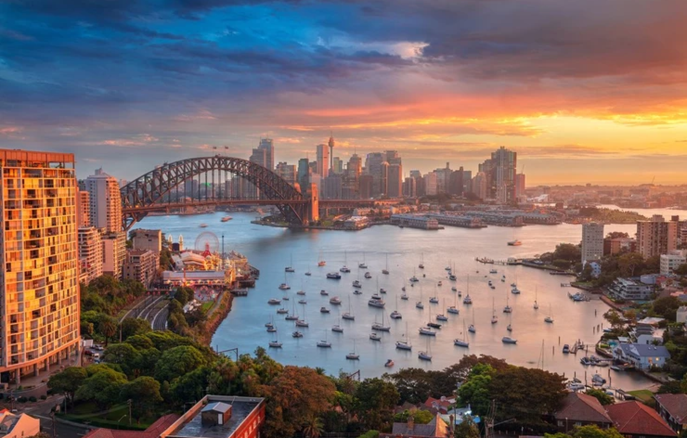
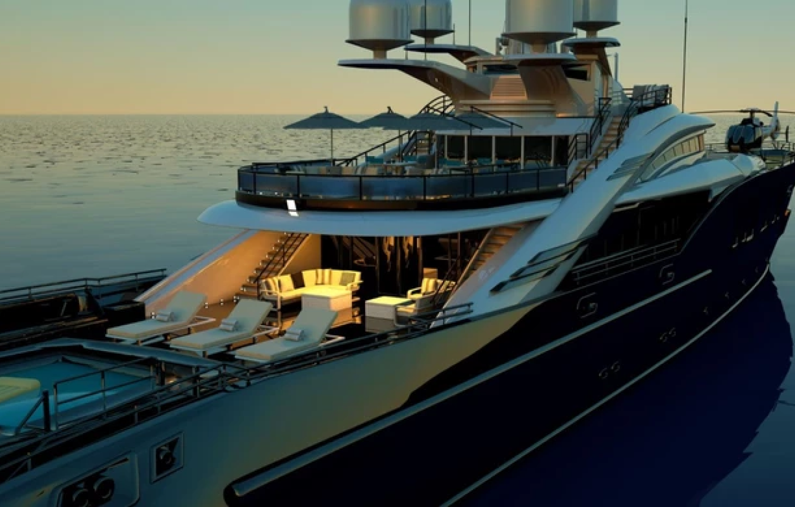
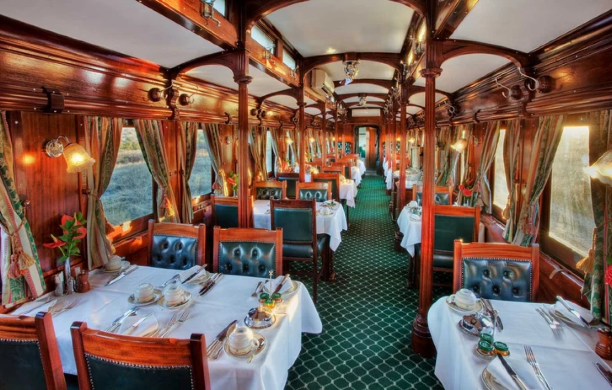
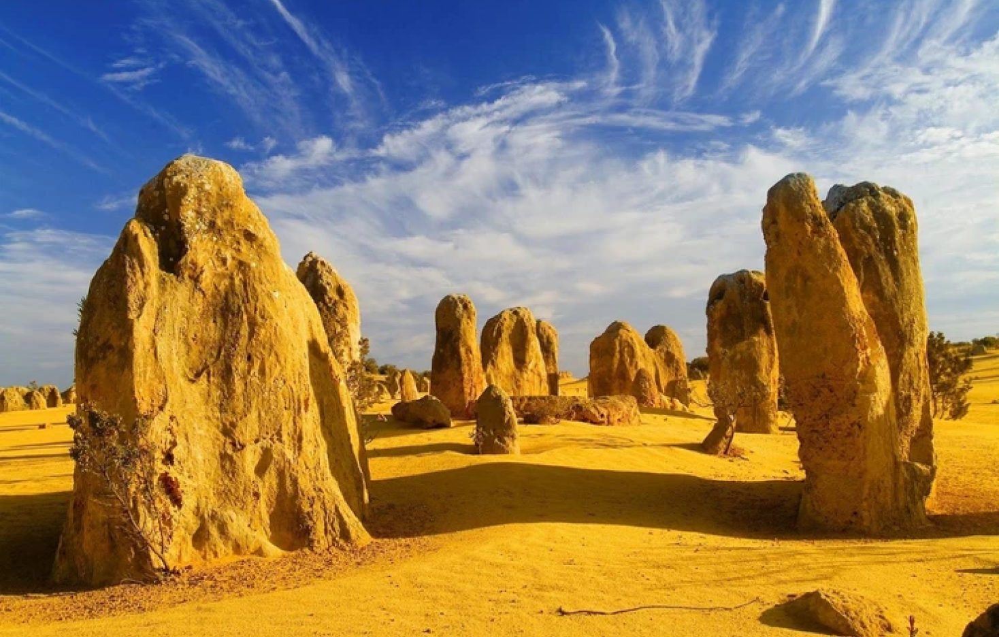
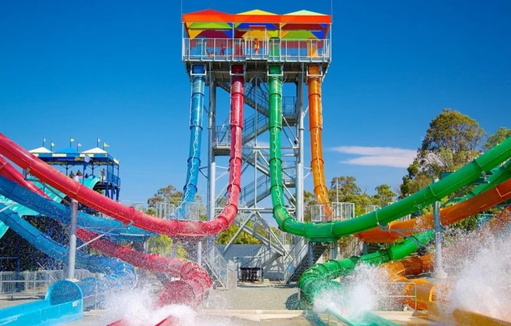
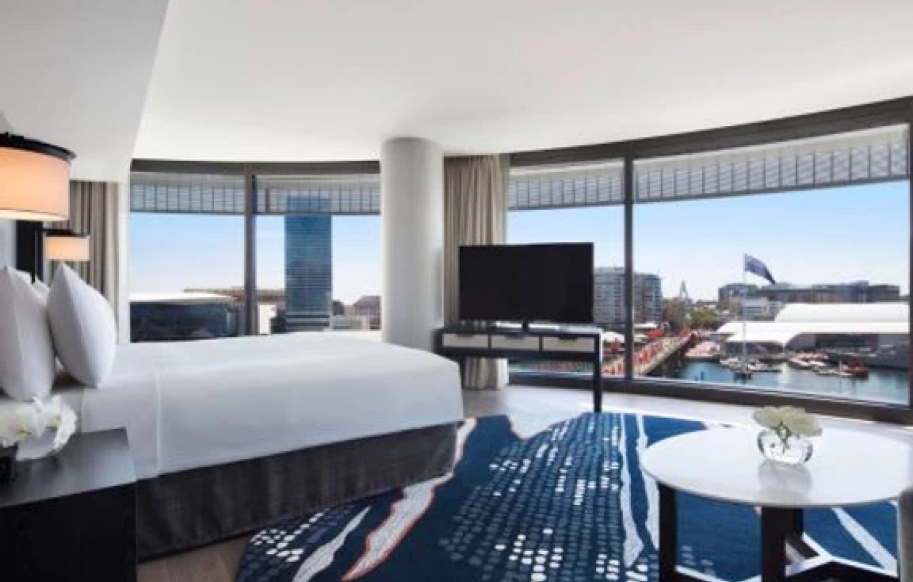

Australia
Home away from home, this is how most tourists describe Australia. Australia's living standard is one of the highest in the world. Australians are known for their friendliness, they are cool to live with. As such, you will be treated to numerous beauties during your trip. There are countless natural attractions, serene and pure air, and loads of beauty that make this country stand out among tourists' options.
Tour on a private yacht
In your private yacht, tour around the Whitsunday Islands. On this tour, you will come to enjoy the beauty of sailing on calm seas, with a lot of beautiful scenery to improve your experience.
There are 74 islands available for you to explore, as long as you carry the essential provisions you need. Nothing will stop you from exploring the way you want.
Enjoy Luxury tours via train
Australia is renowned for its luxurious trains. Prepare for an excellent trip as you hop on this ride covering around 2979 kilometers or 1851 miles. This journey will take you across mountains, tropics, deserts, and other beautiful sights. From Darwin to Adelaide, it will take three days for the Ghan to complete this crossing the continent. Another excellent tour is the 4-days Sydney to Perth tour.
The Pinnacle is the opening to another world
The Nambung National Park, otherwise called the Pinnacle, is an opening to another world. It is located on the Turquoise coast of Western Australia, and it is approximately 250 kilometers away from the North of Perth. This location houses ancient limestone pillars that look like extra-terrestrial tombstones.
Are you traveling by New Year? Don't miss the Fireworks
On the eve of the new year, enjoy the spectacular show displayed at Sydney Harbour. Fireworks kickstart at 9 pm, and continue until midnight of the New Year's Eve. This is a joyful moment you should not miss. Fireworks bring so much fun and joy to everyone present.
Enjoy Roller Coasters and Water Slides on the Gold Coast
If you visit Australia, there are a lot of fun things to do. The Gold Coast's Park allows you to enjoy riding through water slides and beholding fascinating wildlife. If you can imagine the fun, then the Gold Coast is waiting for you.
Home away from home Australian Hotel
There is no better feeling than feeling at home in your luxury hotel. Across Australia, you will come across several luxury five-star hotels that will help you enjoy your night rest without troubles. One of the best options is Longitude 131. Many others will help you enjoy every night's rest.
